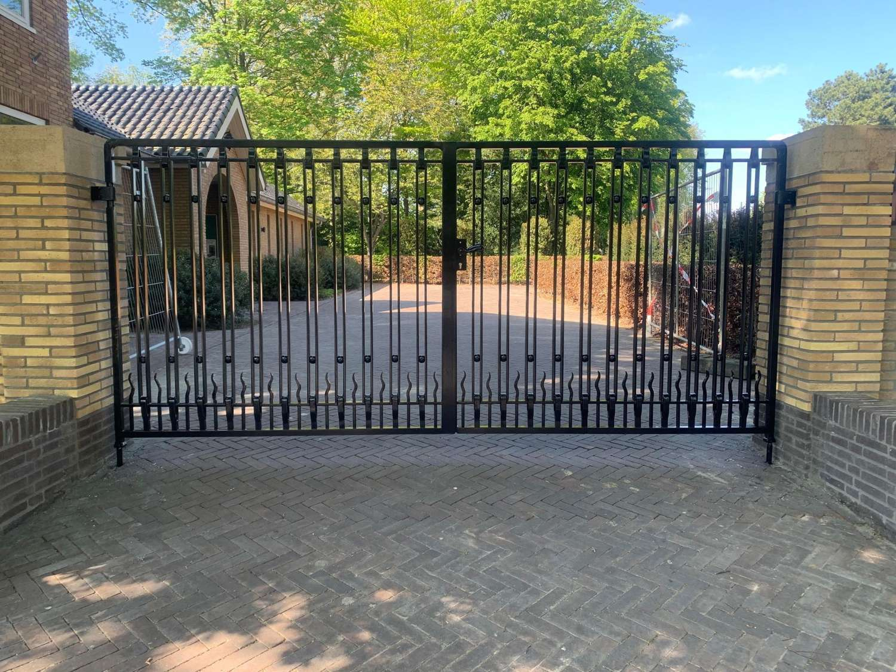
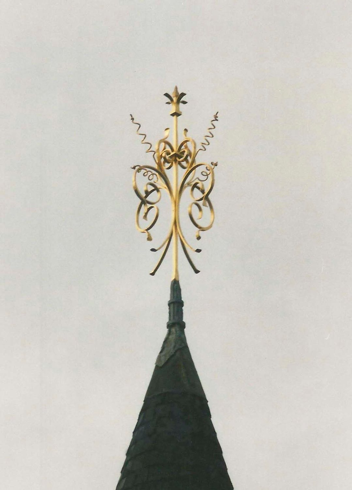
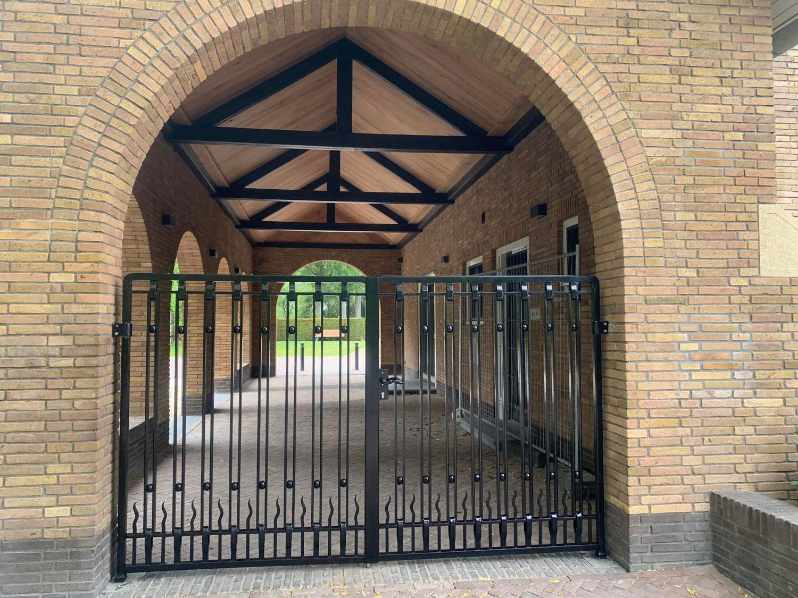
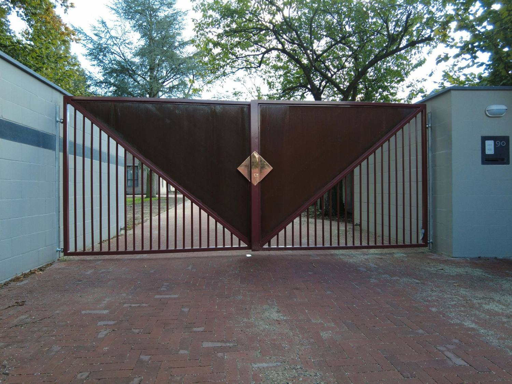
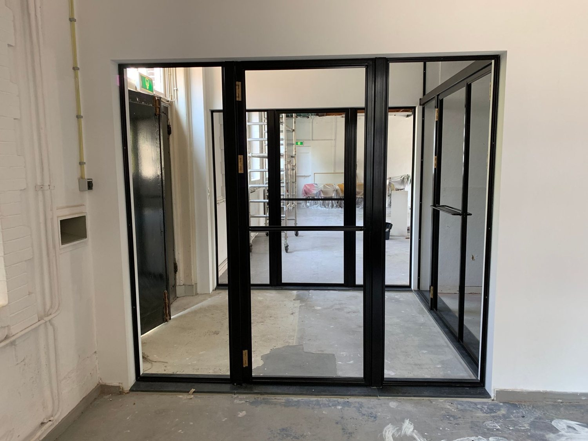
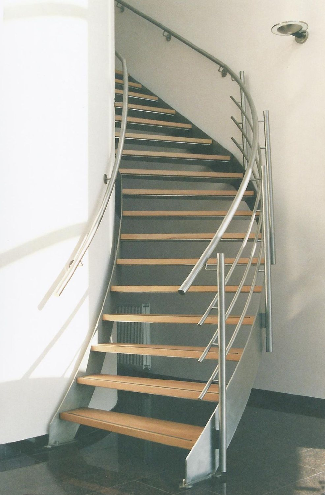
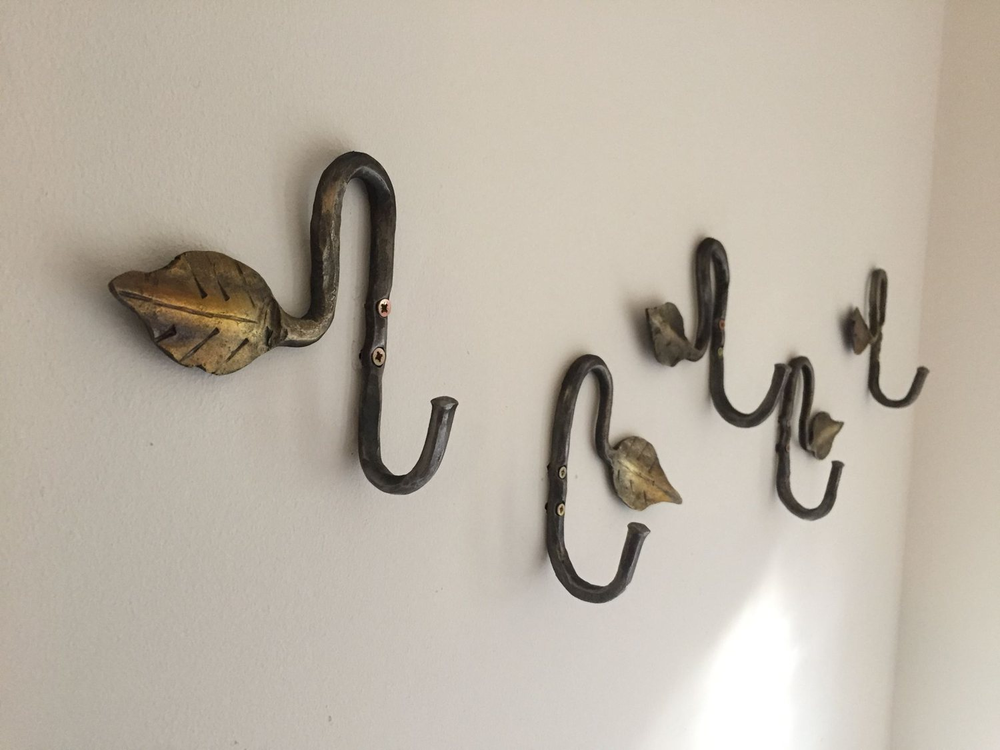
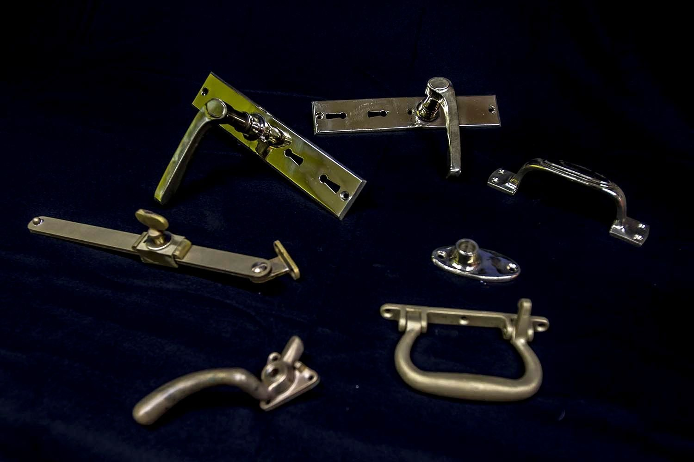

Poorten en hekwerk
Sierhekwerk op maat, exclusieve looppoorten en veilige inrijpoorten. Naar uw ontwerp of dat van ons.
Aanbod

Sierhekwerk op maat, exclusieve looppoorten en veilige inrijpoorten. Naar uw ontwerp of dat van ons.

Binnendeuren van staal met 6 mm gehard veiligheidsglas voor een moderne, industriële uitstraling.

Trappen en bordessen in alle soorten en maten.

Toegangspoorten, hekwerken, torenbekroningen en windvanen van onder andere historische gebouwen en kerken, op traditionele wijze.

Van kleine tot grote opdrachten, van restauratie tot seriematig werk.

Staal, roestvaststaal, aluminium, koper en messing. In onze werkplaats of op locatie.









Workshop
Voor groepen en voor een enkele deelnemer. U leert onder begeleiding van ervaren smeden de basis en de veiligheidsregels: staal vormen, vuurbeheer, hameren en eenvoudige werkstukken maken.
Vraag vrijblijvend naar de prijs en de beschikbare data.